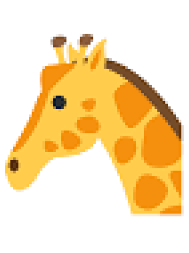

Machine learning workflows#
Minimal
 Cite original method
Cite original method
It is vital that the original deep learning method can be clearly identified. Thus, it is critical that the original methods paper is cited that describes the used machine learning approach.
 Access to model
Access to model
The model used for ML-based processing needs to be publicly accessible. The aim is to allow others to test and examine the workflow. Thus, making the model accessible on request is a minimum requirement.
 Example or validation data
Example or validation data
Example image data that can be used for testing the workflow should be openly accessible for testing the machine learning workflow.
Examples HenriquesLab/ZeroCostDL4Mic
References Heil, B.J., Hoffman, M.M., Markowetz, F. et al. Reproducibility standards for machine learning in the life sciences. Nat Methods 18, 1132–1135 (2021). https://doi.org/10.1038/s41592-021-01256-7
Recommended (Pre-trained & novel models)
 Train, test & metadata
Train, test & metadata
To facilitate the reproduction and validation of results from either models trained from scratch or pre-trained models that were re-trained, the full training and testing data and any training metadata (e.g. hyperparameters, training time given computing resources) should be made available.
References Heil, B.J., Hoffman, M.M., Markowetz, F. et al. Reproducibility standards for machine learning in the life sciences. Nat Methods 18, 1132–1135 (2021). https://doi.org/10.1038/s41592-021-01256-7
 Code available
Code available
The code used for training the model should be provided. Code, as well as data, should be provided via public repositories (European Organization For Nuclear Research and OpenAIRE 2013).
Examples:
MouseLand/cellpose
stardist/stardist
Heil, B.J., Hoffman, M.M., Markowetz, F. et al. Reproducibility standards for machine learning in the life sciences. Nat Methods 18, 1132–1135 (2021). https://doi.org/10.1038/s41592-021-01256-7
 Limitations
Limitations
The authors should discuss and ideally test how well the model has performed and show or at least discuss any limitations of the used machine learning approach on their data.
Cloud hosted or container
{kind=link}
The uptake and integration of code, models, and training data is vastly improved by tools that minimize the effort required for access. Containers enable code to be run locally on a variety of operating systems without modification. Alternatively, with appropriate compute infrastructure, cloud-hosted interfaces can democratize access to powerful runtime environments.
Moreau, D., Wiebels, K. & Boettiger, C. Containers for computational reproducibility. Nat Rev Methods Primers 3, 50 (2023). https://doi.org/10.1038/s43586-023-00236-9
Ten simple rules for writing Dockerfiles for reproducible data science | PLOS Computational Biology https://journals.plos.org/ploscompbiol/article?id=10.1371/journal.pcbi.1008316
Ideal (novel models)
 Standardized format
{kind=link}
Utilization of community standards and formats is further increasing the ease of reproduction. This is also true for machine learning. New machine learning models could therefore be be created complying with standardized formats.
References Ouyang W, Beuttenmueller F, Gómez-de-Mariscal E, et al. BioImage Model Zoo: A Community-Driven Resource for Accessible Deep Learning in BioImage Analysis. bioRxiv; 2022. ttp://doi.org/10.1101/2022.06.07.495102